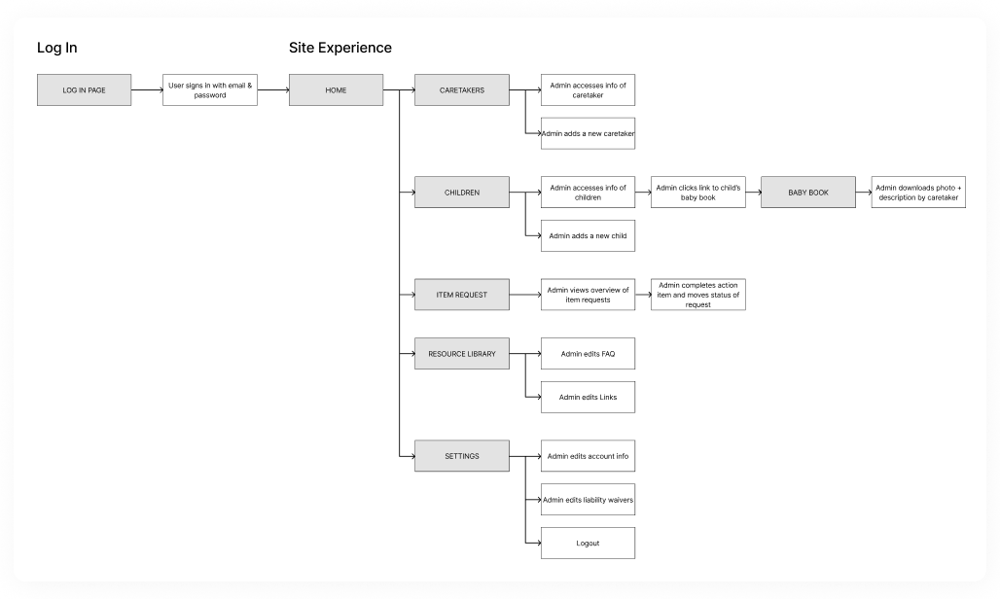
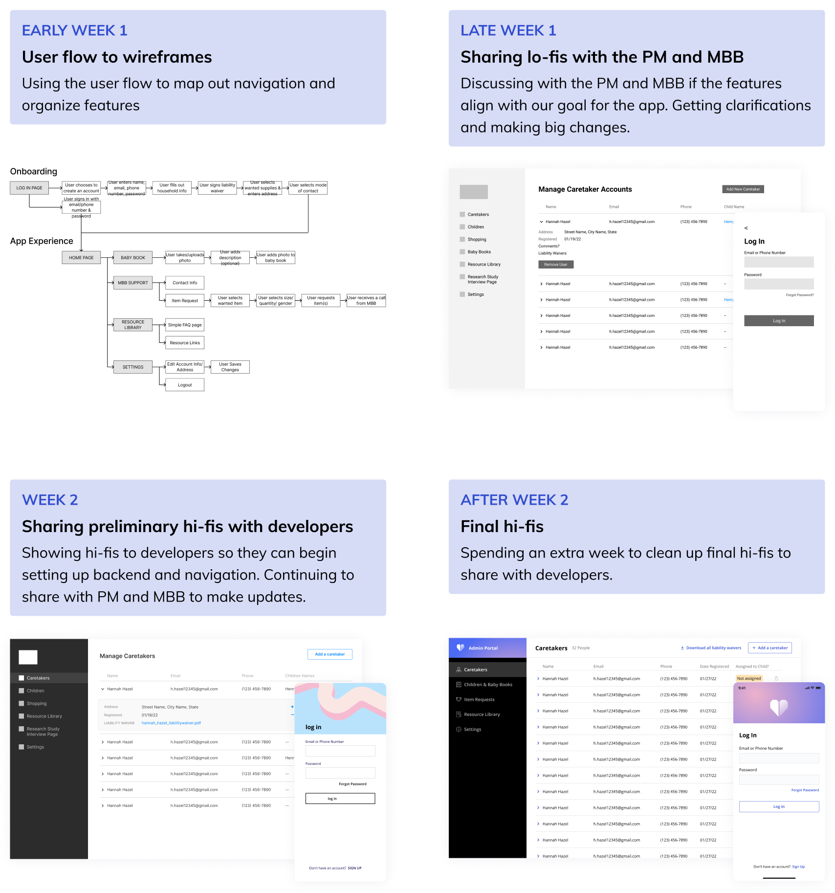
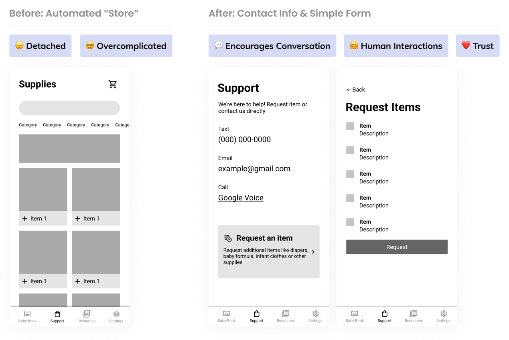

Motherhood Beyond Bars
Duration
Jan 2022 - Apr 2022 (3 months)
Team
Product Manager, Engineering Manager, 2 Designers, 4 Developers
Role
UI/UX Design
Tools
Figma
Teaming up with Motherhood Beyond Bars
Motherhood Beyond Bars (MBB) is a Georgia-based nonprofit that works to support the infants, mothers, and caretakers in these situations. Part of their work involves calling caretakers to provide them with resources and supplies, but the organization is concerned about the amount of time required for calls as their client numbers continue to grow.
For one semester (and counting), MBB partnered up with my team at Bits of Good to develop a scalable platform that streamlines the onboarding process and allows for more efficient communication with caretakers.
A mobile app to get caretakers ready for their role
The app contains a variety of features that improves communication between caretakers and MBB.
An admin portal to manage information
The corresponding platform to the mobile app, where administrators can access all the information of their caretakers and update forms and information.
Goals, product requirements, and users
The leadership team—the product manager, engineering manager, and us two designers—had a two-week headstart before developers joined our team. During this time, we consulted with MBB and met up several times to speedily establish a roadmap for the product.
The first discussion with Motherhood Beyond Bars
To get a better understanding of MBB’s main goals and requirements, our team held a meeting with Amy and Vanessa, two of the people leading MBB, to establish a list of product needs and points to keep in mind throughout our development process.
Two user groups, two different platforms
After this meeting, we began drawing out features for the caretaker app based on some of the needs Amy and Vanessa had listed. We also realized we needed to develop an accompanying admin portal that allows MBB admins to view caretaker information.
We organized the features with two user flows, which our product manager reviewed and updated with Amy and Vanessa.
Incorporating MBB’s branding in our design system
During our meeting with Amy and Vanessa, they mentioned that MBB was shifting over to a new vivid brand design. As we began to work through our designs, we decided to use gradients, bold colors, inviting language, a plain font, and a minimal design to reflect their brand while keeping our interface simple and readable. We pulled and customized design components from Bits of Good’s own design system.
Part 1: Caregiver Onboarding
The onboarding workflow automates information collection from caretakers and compiles it for MBB. This reduces the amount of time MBB spends on menial tasks as the organization continues to grow.
Challenge: Get wireframes from 0% → 100% in two weeks
This first sprint was a little daunting—because developers began working shortly after we designers started, we had about two weeks to mock up an entire onboarding process. We had to find an efficient way to roll our design in phases to Amy and Vanessa, our leadership team, and the developers.
Part 2: Support Page + Item Requests
After onboarding, caretakers can reach out to MBB for additional help through a support page. This page lists the organization’s contact information and leads them to a form where they can request additional baby supplies from MBB.
Over-automated? Maintaining person-to-person interactions
We initially visualized the item requests feature as an online store, with a catalog, cart, and all. But MBB explained that requesting items was not a formal process, and they planned to call caretakers individually after they made their requests.
Working with Amy and Vanessa, we decided the item request feature should be a form within a support page, listed with the organization’s contact information.
Part 3: Baby Book
The baby book, a photo-uploading portal, allows caretakers to add photos and descriptions of their children on a regular basis, which admins can print out and share with mothers. This helps MBB ensure that caretakers are documenting regularly and simplifies the process of collection and printing photos.
Part 4: Resources
MBB also wanted a way to share and update links and FAQs to caretakers, which is especially helpful for new caretakers.

Part 5: Settings
The caretaker app and admin app both have a settings page to edit account information. MBB also requested that admins be able to edit liability waivers.

Future considerations and the sustainability of the app
I had an amazing time working with my team and Motherhood Beyond Bars on this app. Our team rolled out a good number of features in one semester, and as this project continues for another semester, we need to consider the best way to make this project usable and sustainable in the future. Some future considerations include:
We also want to make features customizable to admins to ensure the sustainability of the app. Admins can currently change liability waivers and resources, and we should continue to make sure the app can adapt to the organization’s growth.
I’m excited to see where this project goes in future semesters, and to see this app creating real impact for a really impactful organization.

Let's get in touch!